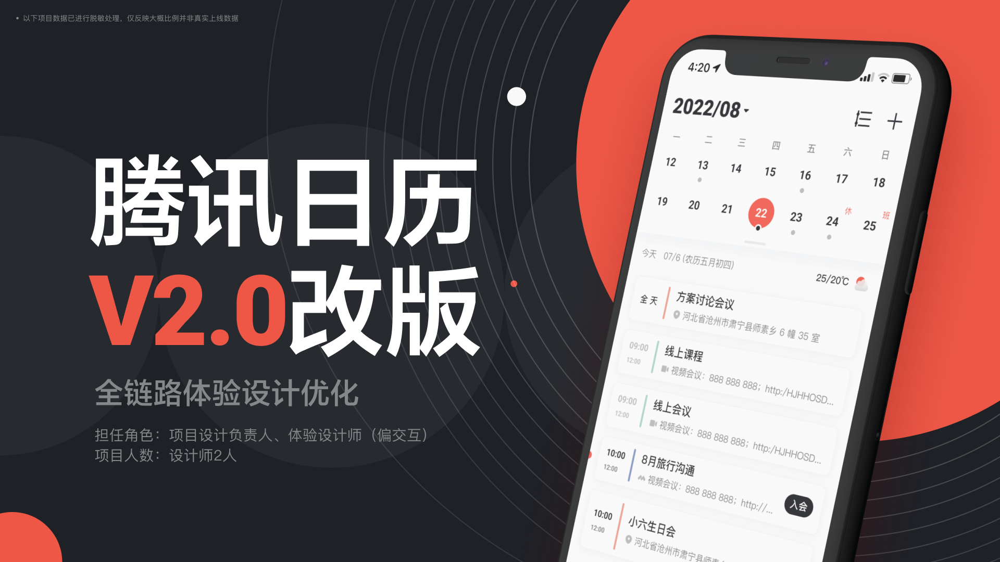
从办公效率工具，到在线工作生活管理平台
项目概述
腾讯日历依托腾讯会议与微信生态，具备会议联动、社交关系连接等优势，但在实际使用中仍存在基础能力不完整、协作链路单一、多端覆盖不足及新增用户留存偏低等问题。
本次项目以“新增用户为何流失”为切入点，通过行业研究、竞品分析和用户访谈，重新梳理产品定位与核心体验，并完成信息架构、查看、记录、协同、多端适配和品牌视觉的系统升级。
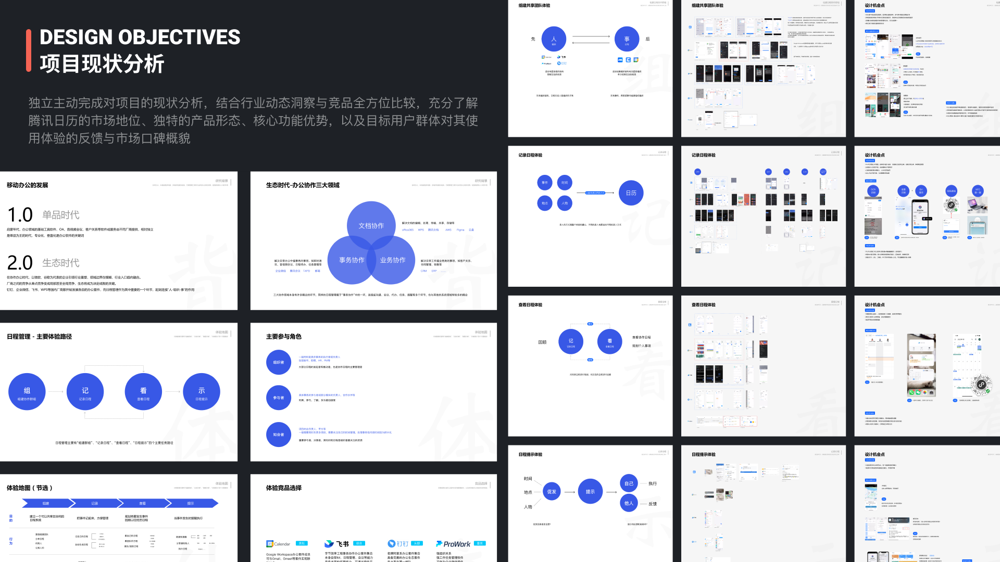
01｜项目背景
移动办公正在从单一工具时代进入生态协作时代。日历也不再只是记录时间的工具，而是连接会议、任务、团队协作和个人生活的重要入口。
腾讯日历虽然拥有腾讯生态优势，但产品仍存在以下问题：
- 基础功能之间缺少联动；
- 协作能力过度依赖腾讯生态；
- 缺少电脑、平板、手表等多端支持；
- 产品偏向商务办公，难以覆盖生活管理需求；
- 用户进入产品后，难以形成持续使用习惯。
为什么用户开始使用腾讯日历，却没有长期留下来？
02｜用户研究
项目研究阶段持续三周，由两名设计师和三名产品成员共同参与，完成了：
- 8 场有效深度访谈；
- 80 次有效电话回访；
- 用户招募、访谈提纲及原始记录整理；
- 用户画像、流失原因和需求数据分析；
- 完整的流失用户研究报告。
研究覆盖三类典型用户：
复杂事务协调者
以 HR、助理和行政人员为代表，需要同时管理会议、差旅、项目及多人安排，重视共享日历和团队协同。
团队与项目管理者
以产品经理、项目负责人和教师为代表，需要跨设备查看个人及成员日程，对多端能力和会议信息整合要求较高。
个人生活管理者
以设计师、学生和自由职业者为代表，更关注个人计划、生活记录、视觉表现及自定义能力。
重视秩序与计划，依赖多个终端，并倾向于将工作和生活记录在同一个时间系统中。
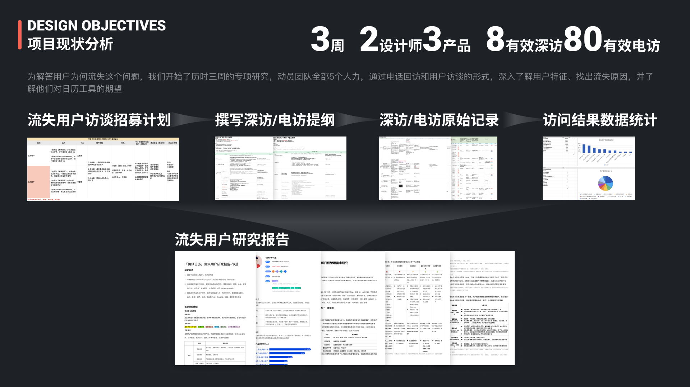
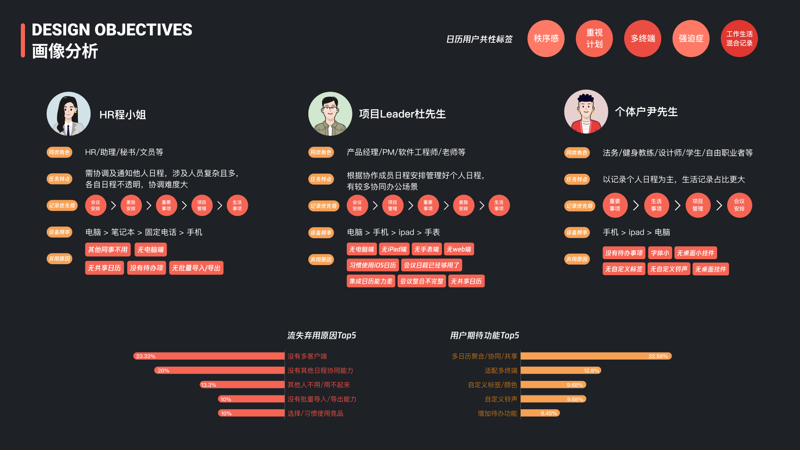
03｜核心问题
调研发现，用户流失主要集中在以下几个方面：
- 缺少电脑端、平板端及其他终端；
- 无法聚合其他平台的日历；
- 团队成员不使用，个人也难以持续使用；
- 缺少共享、待办、批量导入导出等基础能力；
- 已经在其他日历或办公平台中形成使用习惯。
用户期待的能力则包括多日历聚合、协同与共享，多终端和语音记录，自定义标签、颜色和提醒方式，更丰富的查看视图，以及待办和个人生活管理能力。
其中，“其他人不用，自己也用不起来”反映出一个关键问题：日历产品高度依赖组织生态，仅依靠腾讯内部协同能力，难以覆盖用户真实而复杂的工作环境。
04｜产品定位升级
基于研究结果，我们重新定义了腾讯日历的产品角色：
从商务办公效率工具，升级为在线工作生活管理平台。
用户的一天并不存在明确的工作与生活边界。会议、健身、出差、演出和家庭安排共同构成了完整的时间系统。
因此，腾讯日历不仅需要提高办公效率，更需要帮助用户统一管理工作、生活和长期计划。
围绕这一方向，我们制定了三项核心设计目标：
建立更易触达的信息架构
把查看、管理、发现等路径重新拆分，让核心任务更靠前。
提供更丰富灵活的日历视图
覆盖轻量记录、专业时间管理和多设备查看场景。
塑造差异化的品牌语言
从工具化视觉转向更温暖、活力、从容的时间管理体验。
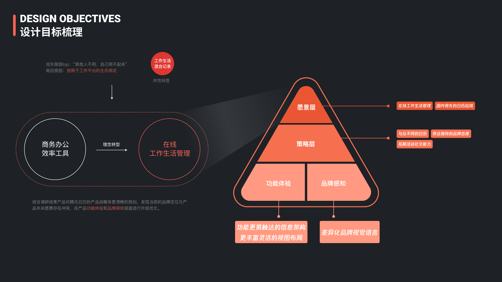
核心体验设计
05｜重构产品信息架构
我们将日历的核心体验总结为：
协、记、看、示
- 协：订阅和共享日历；
- 记：创建并记录事件；
- 看：查看和管理日程；
- 示：通过提醒推动执行。
其中，订阅与记录是内容基础，查看是产品核心，提醒是重要触点。
腾讯日历 1.0 将大量功能集中在首页和侧边栏中，核心操作与低频功能混杂。2.0 版本重新划分为三个主要模块：
查看日程
集中承载当天安排、日期浏览和多种日历视图。
日历管理
统一管理个人、团队、订阅日历及第三方账号。
发现广场
聚合赛事、演出、节目和公共活动，为日历增加新的内容来源。
新的结构聚焦核心查看路径，同时将管理和内容发现能力独立呈现，使产品层级更加清晰。
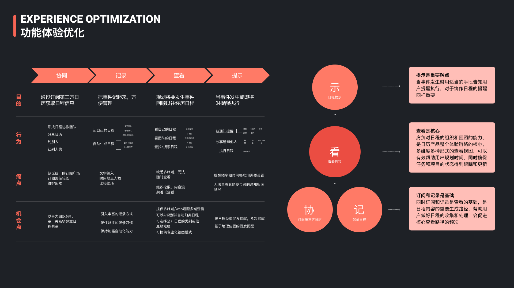
06｜查看体验优化
旧版本主要采用纵向日程列表，存在日期浏览效率低、多天信息混杂和长列表滚动负担较重等问题。
2.0 版本进行了以下优化：
- 日期区域支持单周、双周和月历分段展开；
- 首页优先聚焦当天日程；
- 支持左右滑动快速切换相邻日期；
- 新增列表、日、周、月、年等多种视图；
- 通过时间刻度、事件高度和冲突排列规则，清晰表达复杂日程；
- 根据信息优先级展示标题、时间、地点和参与信息。
腾讯日历由单一列表工具，升级为能够同时覆盖轻量记录与专业时间管理的多视图系统。
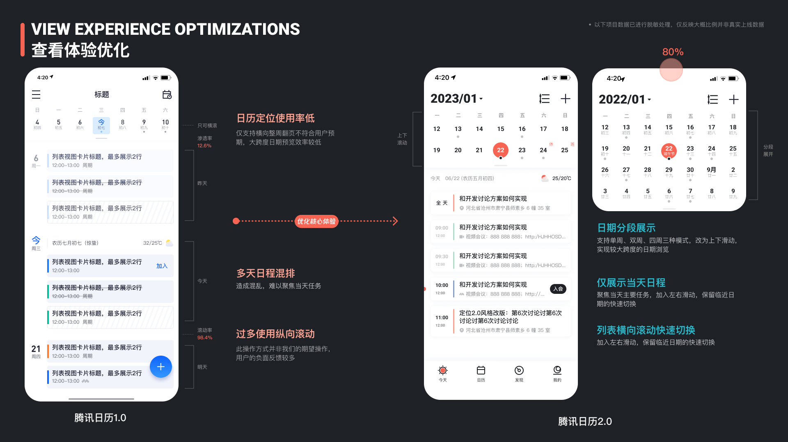
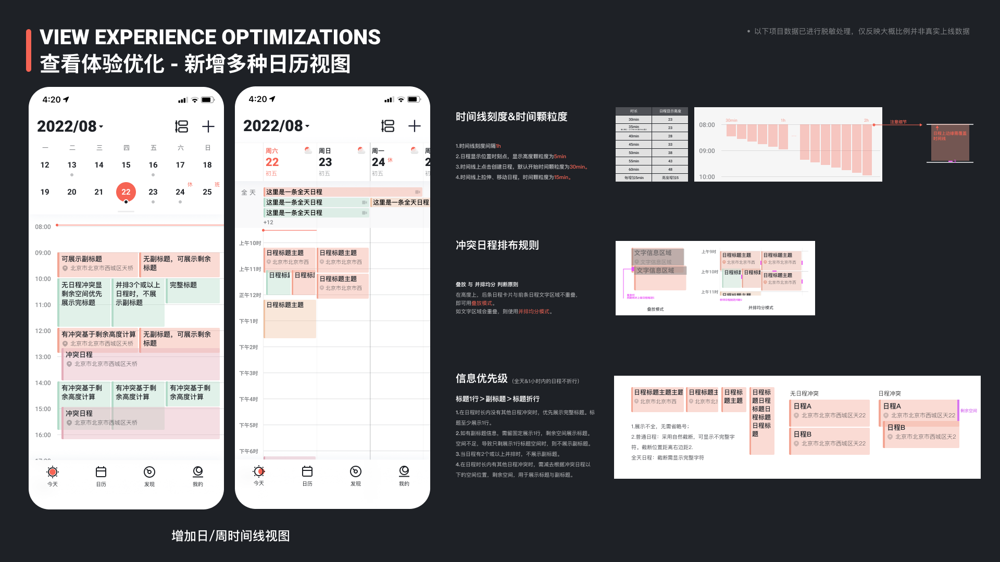
07｜记录体验优化
旧版本以自然语言聚合输入为主要亮点，但入口隐蔽、识别结果不够确定，用户仍需进入详情页反复确认。
新方案采用“智能输入＋标准表单”并存的方式：
- 保留自然语言识别能力，并增加输入示例；
- 提供结构化表单，清晰填写标题、时间、地点、提醒和重复规则；
- 增加早上、中午、下午、晚上和全天等快捷时间选项；
- 保持输入过程简单，同时提升记录完整性和确定性。
这一设计既保留了智能输入效率，也符合大多数用户已有的日历操作习惯。
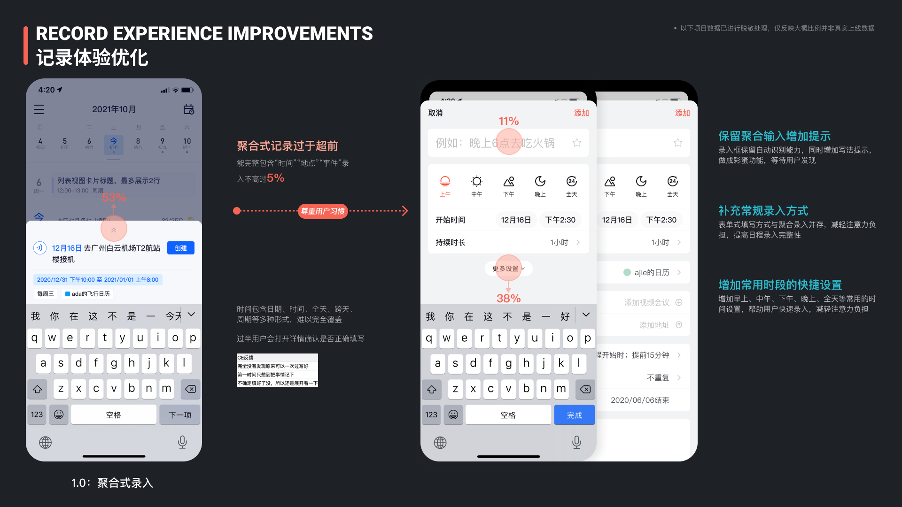
08｜协同与开放能力
为了减少对单一组织生态的依赖，2.0 版本强化了开放接入能力：
- 统一管理个人、团队和订阅日历；
- 支持 Exchange、CalDAV 等常用协议；
- 接入 iCloud、企业微信、飞书等不同平台；
- 清晰展示日历来源、授权状态和订阅关系；
- 通过发现广场订阅赛事、节目、演出和公共活动。
用户无需迁移原有数据，也能在腾讯日历中统一查看和管理不同来源的日程。
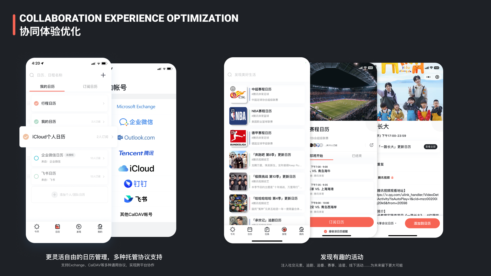
09｜Pad 与多端适配
多端能力不足是用户流失的重要原因，因此项目同步设计了 Pad 版本。
Pad 端并非手机界面的简单放大，而是根据大屏特征重新组织信息：
- 使用侧边导航和多栏布局；
- 同时呈现日期、日历列表和日程详情；
- 支持日、周、月等不同视图；
- 通过浮层和侧栏完成创建与编辑；
- 保持手机与 Pad 的导航、颜色和交互逻辑一致。
多端适配进一步扩展了腾讯日历在办公、学习和生活场景中的使用范围。
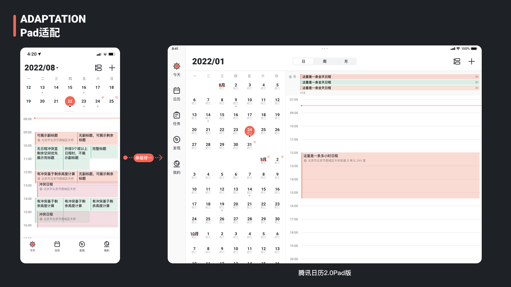
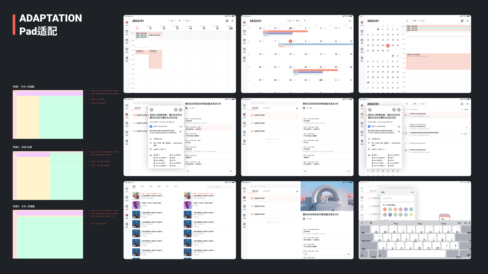
品牌设计
10｜品牌核心价值
产品定位升级后，原有偏商务和工具化的视觉语言已经无法承载新的产品愿景。
日历记录的不只是时间数字，而是用户每天真实发生的工作、生活和关系。
因此，我们提出新的核心品牌价值：
提高生命的质量，过好每一天。
品牌价值承诺被进一步概括为：
工作生活两不误，提高生命的质量。
腾讯日历的品牌定位由三个关键词构成：
温暖
理解并陪伴用户的每一天。
活力
鼓励行动、探索和发现。
从容
通过秩序帮助用户掌控时间。
品牌核心
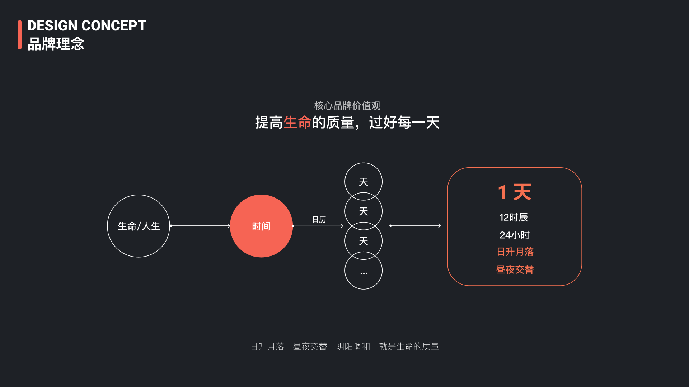
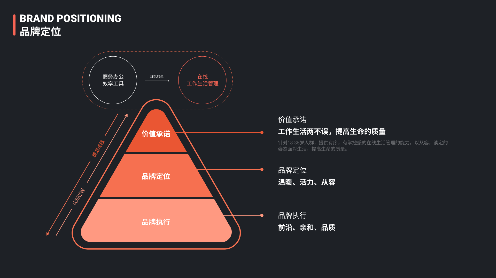
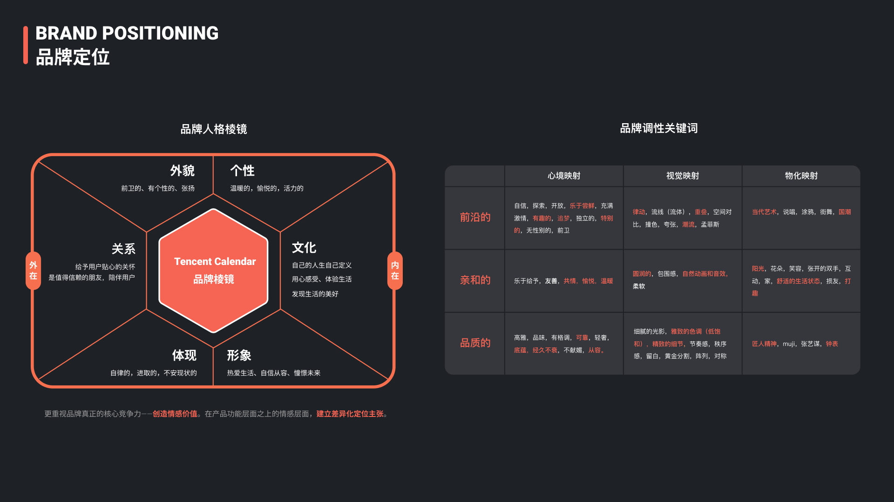
11｜视觉与色彩体系
品牌视觉以“日升月落”为核心意象。
太阳的升起与落下象征时间流动、生命循环和每天重新开始，与腾讯日历的品牌价值形成天然联系。
品牌主色确定为：
朝阳赤传递温暖、生命力和积极向上的品牌感受。
辅助色则从中国传统色中提取与时间、天空、日月和星辰相关的色彩，用于区分不同日历与事件类型，在保持品牌统一性的同时，为用户提供更多个性化选择。
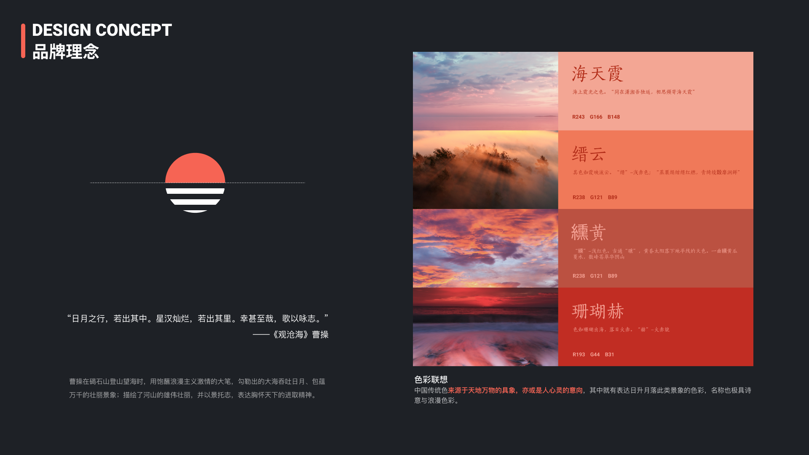
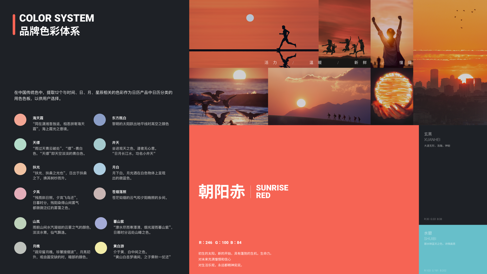
12｜项目总结
本次项目并不是一次单纯的界面改版，而是一次从用户研究、产品战略到核心体验和品牌设计的系统升级。
腾讯日历 2.0 最终完成了：
- 从商务办公工具到工作生活管理平台的定位转变；
- 以查看为核心的信息架构重构；
- 多视图、记录、协同和提醒体验升级；
- 第三方日历与多端能力扩展；
- 以“日升月落”和“朝阳赤”为核心的品牌视觉建立。
项目最终希望解决的，不只是“如何更高效地创建一条日程”，而是：
如何帮助用户理解时间、安排生活，并更从容地过好每一天。
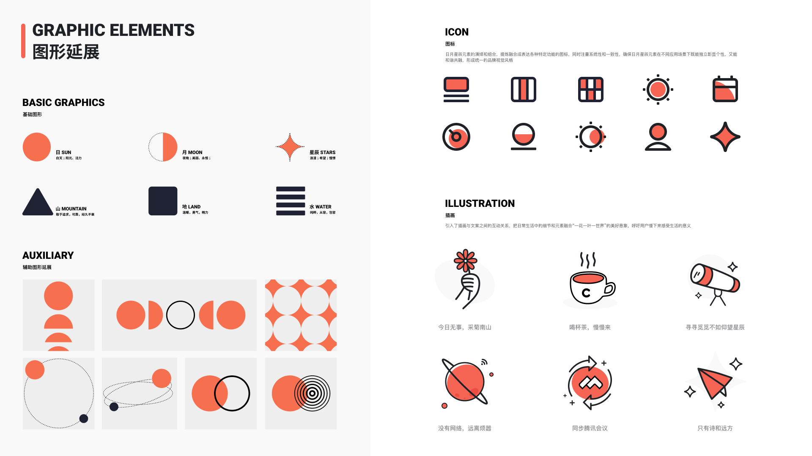